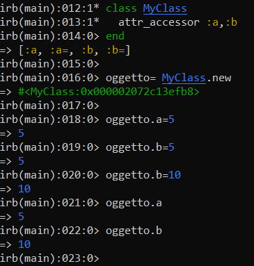
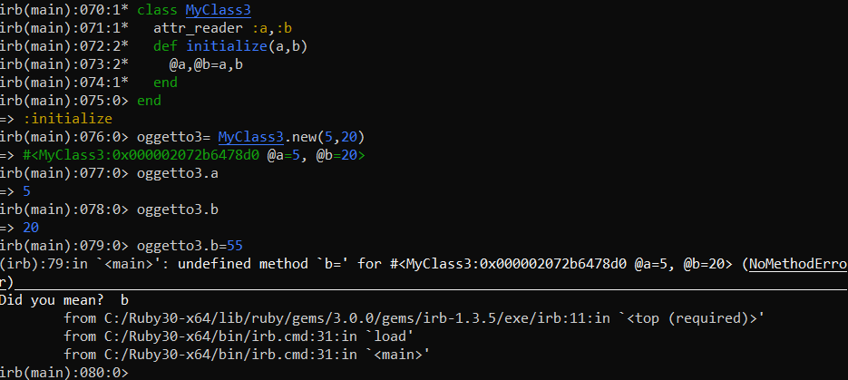
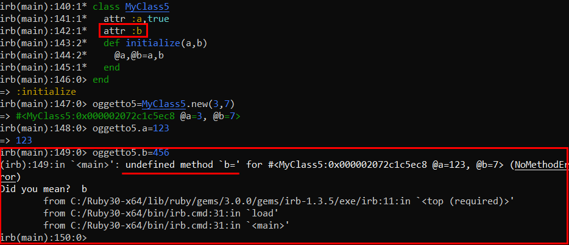

Getter and Setter methods throug Metaprogramming
attr_accessor (define getter & setter)
With the attr_accessor keyword, Ruby silently defines a getter and a setter for us.
The Instance Variables will belong to the class object created ( in the below example “oggetto”)
attr_reader (define getter method)
◇ To initialize the variables we need to define the method "initialize"
◇ Because the setter method is not been defined, if we try to set a variable like in the example below with “oggetto3.b=55” we will get an “undefined method”
attr (define getter, but if defined with
true define a setter too)
If we use attr alone, it defines a getter.
while with true it defines a setter too.
